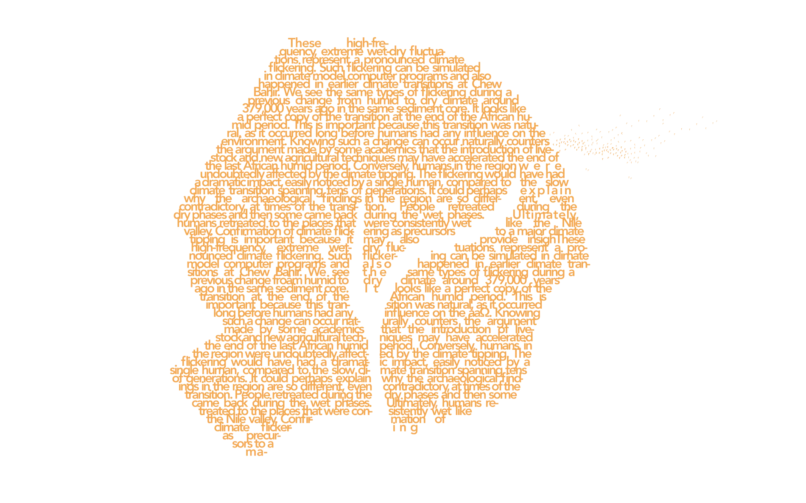
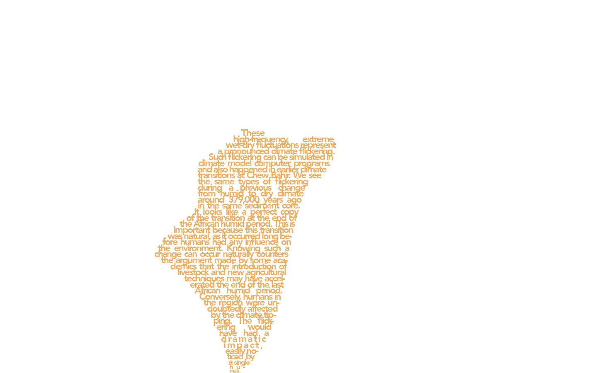
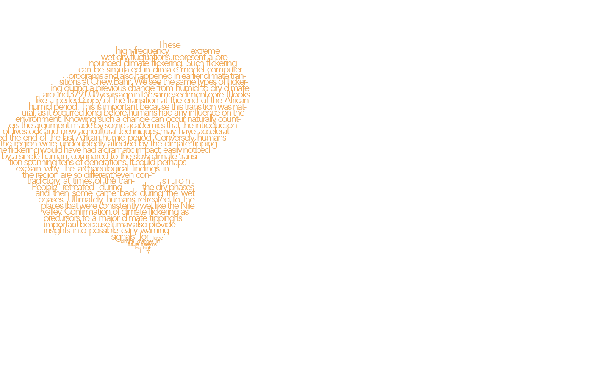
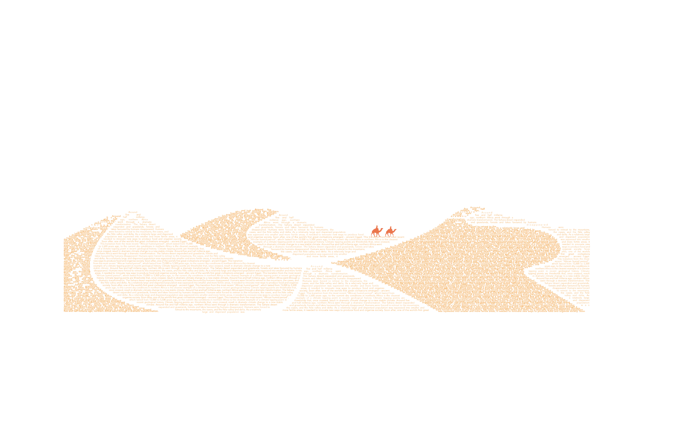
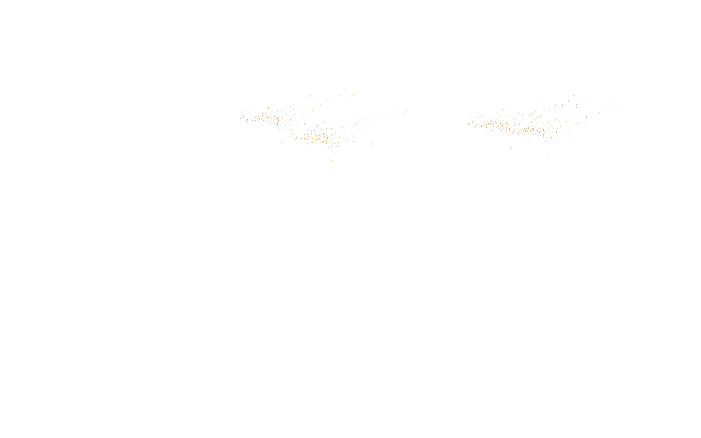
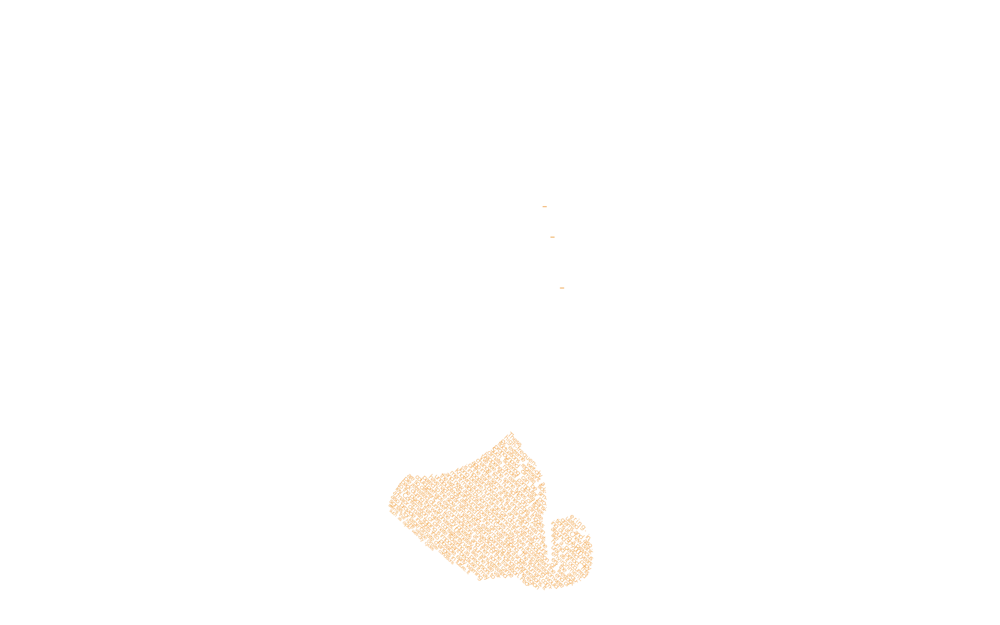
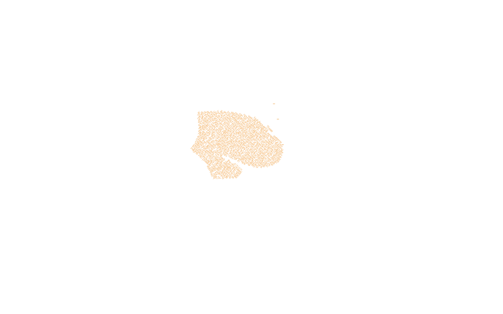
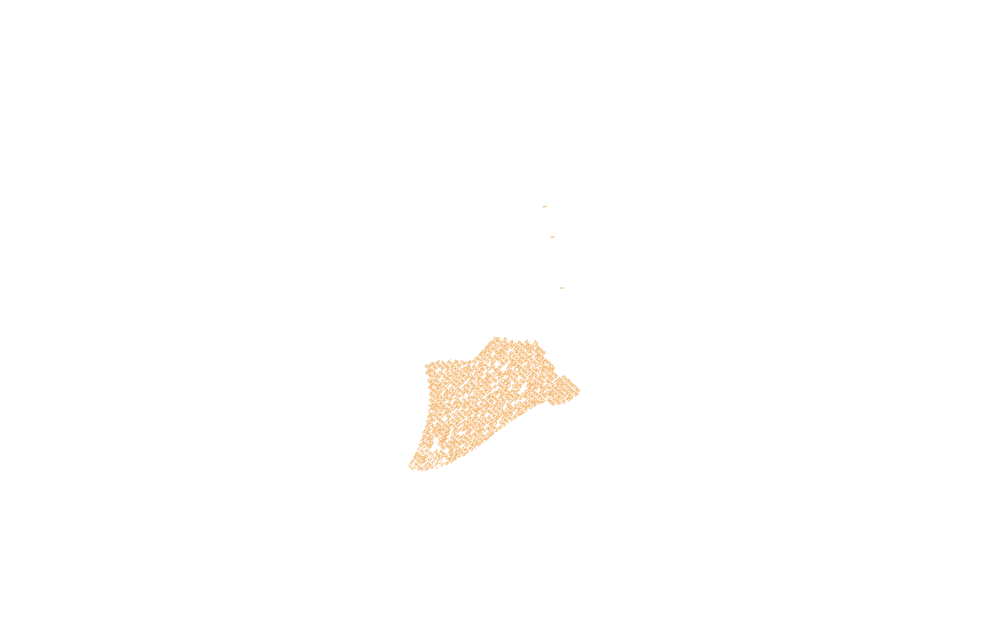

Our new study may
warn us of future
climate tipping
points.



Around five and a half millenia ago, northern Africa went through a dramatic transformation. The Sahara desert expanded and grasslands, forests and lakes favoured by humans disappeared. Humans were forced to retreat to the mountains, the oases, and the Nile valley and delta. As a relatively large and dispersed population was squeezed into smaller and more fertile areas, it needed to innovate new ways to produce food and organise society. Soon after, one of the world’s first great civilisations emerged – ancient Egypt. This transition from the most recent “African humid period”, which lasted from 15,000 to 5,500 years ago, to the current dry conditions in northern Africa is the clearest example of a climate tipping point in recent geological history. Climate tipping points are thresholds that, once crossed, result in dramatic climate change to a new stable climate.
Our new study published in Nature Communications reveals that before northern Africa dried out, its climate “flickered” between two stable climatic states before tipping permanently. This is the first time it’s been shown such flickering happened in Earth’s past. And it suggests that places with highly variable cycles of changing climate today may in some cases by headed for tipping points of their own.
Whether we will have any warnings of climate tipping points is one of the biggest concerns of climate scientists today. As we pass global warming of 1.5˚C, the most likely tipping points involve the collapse of ice sheets in Greenland or Antarctica, tropical coral reefs dying off, or abrupt thawing of Arctic permafrost.
Some say that there will be warning signs of these major climate shifts. However, these depend very much on the actual type of tipping point, and the interpretation of these signals is therefore difficult. One of the big questions is whether tipping points will be characterised by flickering or whether the climate will initially appear to become more stable before tipping over in one go.
To investigate further, we gathered an international team of scientists and went to the basin of Chew Bahir in southern Ethiopia. There was an extensive lake here during the last African humid period, and deposits of sediment, several kilometres deep, underneath the lake bed record the history of climate-driven lake level fluctuations very precisely.
Today, the lake has largely disappeared and the deposits can be drilled relatively cheaply without the need for a drill rig on a floating platform or on a drillship. We drilled 280 metres below the dry lake bed – almost as deep as the Eiffel Tower is tall – and extracted hundreds of tubes of mud around 10 centimetres in diameter.
By putting these tubes together in order they form a so-called sediment core. That core contains vital chemical and biological information which records the past 620,000 years of eastern African climate and environmental history.
We now know that at the end of the African humid period there was around 1,000 years in which the climate alternated regularly between being intensely dry and wet.
In total, we observed at least 14 dry phases, each of which lasted between 20 and 80 years and recurred at intervals of about 160 years. Later there were seven wet phases, of a similar duration and frequency. Finally, around 5,500 years ago a dry climate prevailed for good.
These high-frequency, extreme wet-dry fluctuations represent a pronounced climate flickering. Such flickering can be simulated in climate model computer programs and also happened in earlier climate transitions at Chew Bahir.
We see the same types of flickering during a previous change from humid to dry climate around 379,000 years ago in the same sediment core.
It looks like a perfect copy of the transition at the end of the African humid period.
This is important because this transition was natural, as it occurred long before humans had any influence on the environment. Knowing such a change can occur naturally counters the argument made by some academics that the introduction of livestock and new agricultural techniques may have accelerated the end of the last African humid period.
Conversely, humans in the region were undoubtedly affected by the climate tipping. The flickering would have had a dramatic impact, easily noticed by a single human, compared to the slow climate transition spanning tens of generations.
It could perhaps explain why the archaeological findings in the region are so different, even contradictory, at times of the transition. People retreated during the dry phases and then some came back during the wet phases. Ultimately, humans retreated to the places that were consistently wet like the Nile valley.
Confirmation of climate flickering as precursors to a major climate tipping is important because it may also provide insights into possible early warning signals for large climate changes in future.
It seems that highly variable climate conditions such as rapid wet–dry cycles may warn of a significant shift in the climate system. Identifying these precursors now may provide the warning we need that future warming will take us across one of more of the sixteen identified critical climate tipping points.
This is particularly important for regions such as eastern Africa whose nearly 500 million people are already highly vulnerable to climate change induced impacts such as drought.




